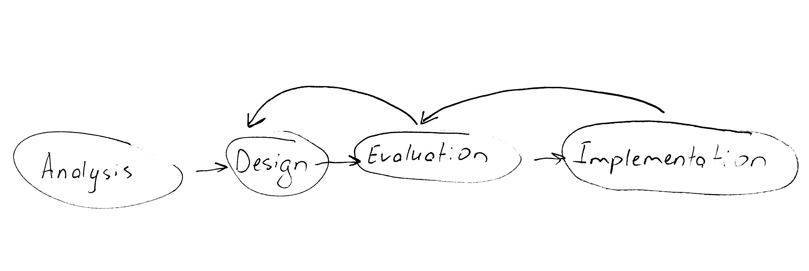
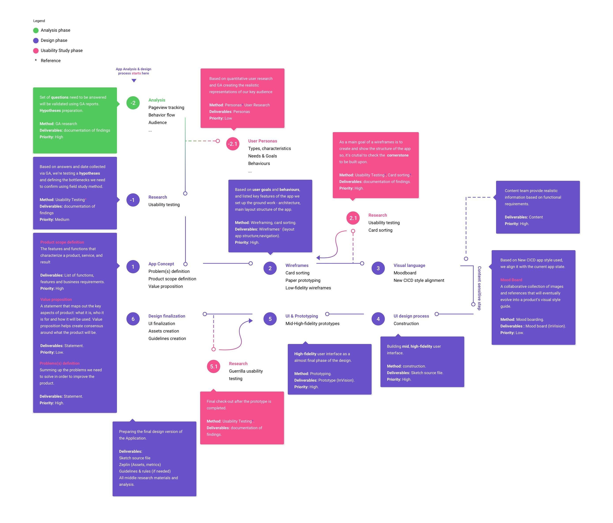
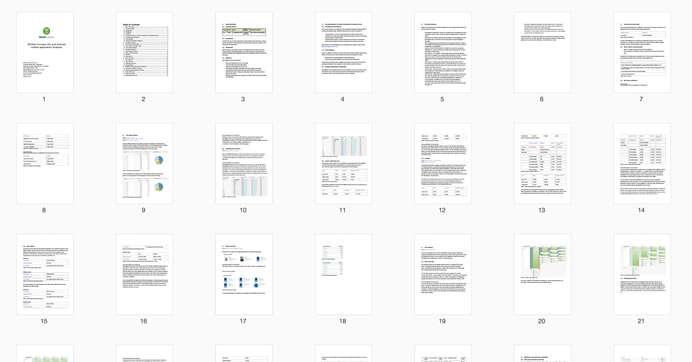
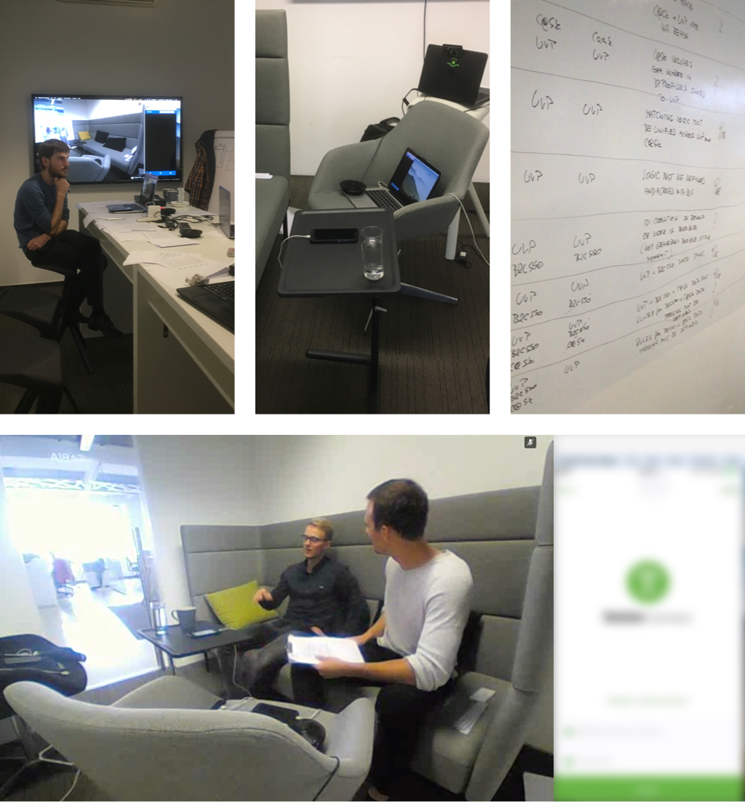
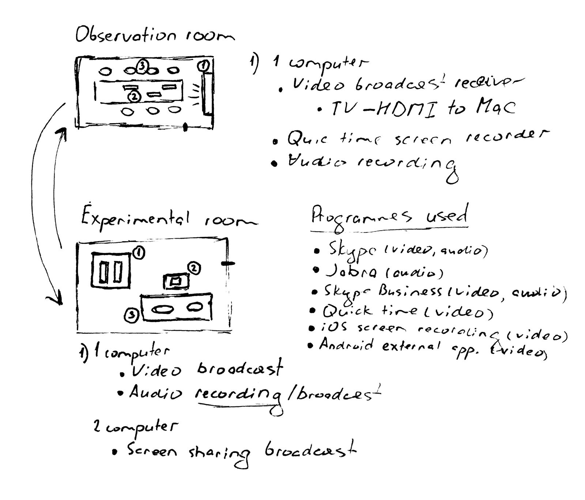
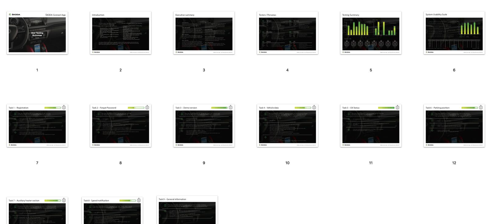

Overview
When we intend to travel from work to home or any different location, we won’t get the logistic simply ever. It is always desirable to have an easy affordable mode to drive.
Market & problem definition
The number of people traveling in the car keeps on rising. The Automotive industry has been always growing intensely. Global sales of passenger cars are forecast to hit 81.5 million vehicles in 2018 and it’s 11% (9 millions) of car increase comparing to the 2015. Concurrence thought the companies and branches are really tight and self-demanding. Just to be conquerable and to claim a good position in the market you need to provide a better customer experience as good as to keep fresh and up to date into the digital world.
The application we’re working on was outdated due to a myriad of reasons. Along with the competition evolution and internal problems, the following factors are the reasons for the difficulties. So our task was to set the train back on track and create an app that will correspond to the existing market needs.
Goals
- Create a truly human centered car connectivity experience.
- Create competitive app that will enlarge and strengthen within existing ecosystem of the brand and digital strategy.
- Full app redesign and UX involvement to obtain the best customer experience.
- To help returning users retain their long-term loyalty.
Our proposal
Instead of overhauling the existing application, we will add useful features, modern and UX corresponding design. As a baseline for the new redesign will serve an old app functionality that will be carefully observed on the availability of issues and system inconsistencies.
Areas of opportunity
These are areas of opportunity that we are exploring.
Parking assistance system simplification.
Moving from, home to the work and then to work, and vice versa, how might the experience change and help to alleviate stress and improve the overall quality of life?
KPI dashboard optimisation.
Using KPI metrics is a way for costumers to quantify their daily based objectives, so they can regularly check up on their performance and determine differences.
Augmentation of users from a petty group to big lengthening the service.
As a part of the Companies ecosystem to increase the loyalty of the returning users and provide a reliable field for their daily based tasks.
Design & business objectives
| Define marketing campaign details. |
Prepare questionnaire about current marketing campaign, targeting, keywords, creatives (banners, ad copy). Questions about planned changes in the campaign. |
| Analyze marketing campaign setup. |
Analyse the campaign and the traffic generated by it. |
| Analyze GA data. |
Identify bottlenecks of current solution. |
| Analyze Mouseflow data. |
Identify bottlenecks and interaction problems of current solution. |
| Analyze Offline stats data. |
Get insight for redesign the process after the registration. |
| Get results of existing in-house user research. |
Request conducted user testing data based on the previous version of the application. |
| Analyse existing result of in-house user research. |
Create an application analysis based on previous conduction. |
| Conduct dealers, registered users interviews. |
Provides insight into the views and attitudes of the target user or group regarding the website. |
| Conduct user research. |
Define user profile and questions to an interview and request 3rd party research. |
| Checkout process adjustments. |
Agree upon changes necessary in checkout process among all involved stakeholders. |
| Draft site content. |
Script, draft and understand site content needs. Filling the web site with a draft content. |
| W/fs, prototyping iteration 1. |
Pilot prototype with existing context. |
| Content finalization (copy, illustrations, car renderings). |
Request and align all necessary content. |
| Visual assets acquisition. |
Collect, analyze and apply all needed resources. |
| W/fs, prototype finalisation iterations. |
Having all needed context to create a final prototype. |
| Conduct user research, validation. |
Provides the final insight into the views and attitudes of the target user or group regarding the website. |
| UX guidelines creation, functional specification. |
Documents that specifies the functions and logic that a system or component must perform. |
| Add new goals to GA . |
The information and data we should be focused on, and how this data can help us to improve your business. |
| Define events to track. |
The events and properties we should define and align in order to improve and track our business goals. |
My role and team
Primarily worked as a User Experience consultant and Product design lead along with my colleagues from the company who were experts in a Visual design solutions.
Methodology & design process
We had to work with a UCD methodology but I felt like I am in a better place to articulate existing process, and its value for myself and organisation, so I initiated the idea to customise the process to the actual needs and goals we faced. Sticked with the 4 stage set up.

The design process was separated by three main core phases: Analysis, Design and Usability study phase. As we had started along with analysis phase comparing and taking into the account the baseline date. The process is more cyclical and has many jumping in and out points, providing more flexibility at any stage of the mechanism.

Step 1: Deep Research and Constant Testing
The first step of work was to deep dive into analytics supported and integrated within the existing mobile application to quickly validate assumptions and create hypothesis.
iOS and Android mobile application analysis
With the means of web analytics, we plan to investigate interactive system used by the company in its business strategy, and to explore the means of achievement of a maximal interactivity of their application using primary quantitative method of collective the information.
Analytics
As as integration with the mobile app we observed, the massive amount of data were available in Google analytics and Mouseflow. As a part of Mouseflow app we priorities and tracked within given analytics tools:
| Tool |
Description |
Outcomes we received |
| Clicks & Mouseflow |
Tracking mouse clicks and mouseflow. |
Clicks map, mouse flow mapping. |
| Funnels |
Tracks user navigation from page-to-page analysing key journeys. |
Pressure points causing drop-offs, lost sales, and poor user experiences. |
| Heat maps |
Helping to identify trends in behavior |
Clicks, movement, scrolls, attention, and geography. |
| Scrolling |
Records of scroll up and down on the page. |
Scroll activities. |
| Session recording |
Recording of the activity from each visitor on your site. |
CCTV observation type, frustration, glitches and errors, lost customers. |
Google analytics
With the means of web analytics, we plan to investigate interactive system used by the company ŠKODA in its business strategy, and to explore the means of achievement of a maximal interactivity of their application using primary quantitative method of collective the information.
Scope for GA
- To use our basic analytics data to supplement results data.
- To use analytics data to generate hypotheses for experimentation and personalisation campaigns.
Set of questions need to be answered:
- What is the objectives and micro, macro goals.
- Deep information about the target audience.
- Analyse how users behave at a point of flow.
- What happens immediately before/after users take a step or visit a page.
- Investigate the precise sequence that users perform different interactions.
- Isolate whether users are taking any unnecessary steps, or returning to previous states for any reason.
- Determine which steps in your scenario fail most often (when the users don’t behave as we intended).
Metrics
In-live site data in Google Analytics, paying close attention to the following metrics:
| Acquisition metrics |
Sessions, unique sessions, % new sessions, new users |
| Behavior metrics |
Bounce rate, page / sessions, avg. session duration |
| Conversion metrics |
Goal conversion rate, goal completion |
Outcome
Documentation that serve as cornerstone for design phase implementation and reinforce reasoning generation. As well we created a hypothesis that are testable.

Step 2: In-Person experiments
Our analysis served as a fundament to create an experiment in a real field with potential and real users.
The idea of product
The idea of the application is to access the most important functions of your car via the application on a smartphone from anywhere thereby to help and engage yourself, make the common interaction process more efficient.
Business case
The test will address several key questions that the design team need to answer to for the next iteration. Based on the Google Analytics data we’re checking, whether the hypotheses and conclusions were confirmed or not. Failing to answer those questions now increases the risks of developing and designing the wrong product.
Procedure
We have each session of 60 minutes that consist of 35 minutes of test tasks and 25 minutes of formal procedures.
Test hypothesis
We found out that by basing hypotheses on our application’s goals we can generate relevant, action-oriented findings. Hypothesis were generated based on Google analytics findings and heuristic evaluation method outcomes provided.
User-Attitude
We think that the biggest drop-off rate for new users in a login screen is cased by not intuitive registration method.
User-Behaviour
We think that the biggest part of users were dropped off or jungle in the app screens for a significant time because of bad information architecture, It's hard for users to find what they're after.
Test objectives
- Do people trust the service, Do people confident to find a right section, Do people confident to navigate through the application.
- Do people confident to manipulate with controls provided.
- Do people confident enough with a registration process.
- Do people understand how to reset the user account password.
- Do people see the availability of Demo version function in the application.
- Do people understand how to find and manipulate with the Driving data section for a specific date.
- Do people confident enough to configure their preferences through the settings screen.
Participants
6 Participants recruited via external agency. English and Czech language speakers. Age varies from 20-50. Sex ration is 1:1. Android and iOS ration is 1:1. All participants are potential drivers and car owners and not familiar with that particular mobile application. Computer and technology understanding level is newbies.
Basic information
Scope: Make an advance
Purpose: full app redesign and UX involvement to obtain the best customer experience.
Type of testing: Qualitative
Strategy: Between-participants
Form: Moderated, presented
The context of product use: Scripted
Scenario: Go through the process using two operation systems.
Time dimension (phase of DEV): Executive
Number of respondents: 6
Length of session: 60 min.
Materials
- Paper materials
- Summary
- Instructions
- Permission form
- Questions
- Script
Metrics
As the main propose of experiment was to talk with a real users. We choose a thinking-aloud technic keeping in mind and preventing ourselves from being affected from talking that could potentially lead to speed & accuracy inaccuracies.
| Qualitative / process data |
SUS (system usability scale) |
| Quantitative / bottom data |
Completion rate
Time on task
Error rates |
Environment
We were limited on time and budget. Usability testing were conducted without any support and full-blown lab provided. The main idea was to try imitate the natural environment and to help participants act naturally and feel comfortable, so we divided people by two groups and adapted the environment based on our desired proposal.
We’re always prefer to conduct in-person testing sessions at quit office spaces.

Participants
11 official participants - 6 users, 1 business owner, 1 product owner, 1 moderator, 2 notetakers.

Based on gathered data we have built a new app concept
- Information architecture was restructured to be more easily used by customers.
- Access points for services in different levels were created to quicken user’s journey in the App.
- Modularity was introduced to increase the flexibility of the App.
- Added possibility to personalise the structure of the App by user.
